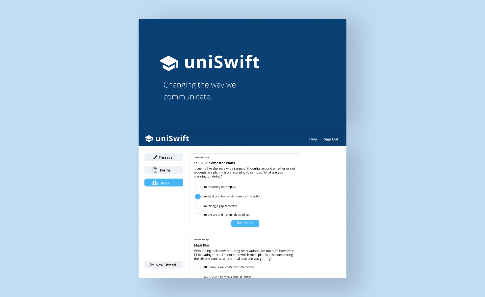
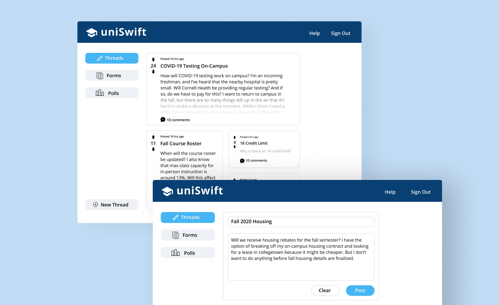

Students are often frustrated with their school’s response or lack of response to certain issues.
COVID-19 in particular has exposed weaknesses in student-to-administration communication.
Many wish they could have more of a say in admin decisions — whether that is grading scheme,
in-person vs online instruction, or financial decisions. Currently, a number of ineffective and
inefficient forms of communication exist. Students try emailing university administrators and faculty,
but either do not receive a response or only receive a response after multiple follow-up emails.
College threads on Reddit are full of angry student rants, but these posts are usually not seen
by administrators and do not lead to actual change in the school’s policy.
uniSwift is a web application that creates a safe space for students and parents to voice their
concerns and for professors and administrators to request feedback. Users are authenticated with
school-issued credentials, making sure any discussions or information released involves only those
who actually attend the school or are affiliated with it. Any user can view and write posts, view
threads, comment on posts, and upvote or downvote posts. Admininistrators and professors can release
forms and polls to request specific feedback from students and get a general sense of the community's
opinions.
In the midst of the pandemic, many students were left confused about the fall 2020 academic calendar,
method of instruction, housing allocations, tuition rates, and many other big decisions.
Higher education is facing unprecedented circumstances, and this calls for a more centralized
and transparent form of communication.

